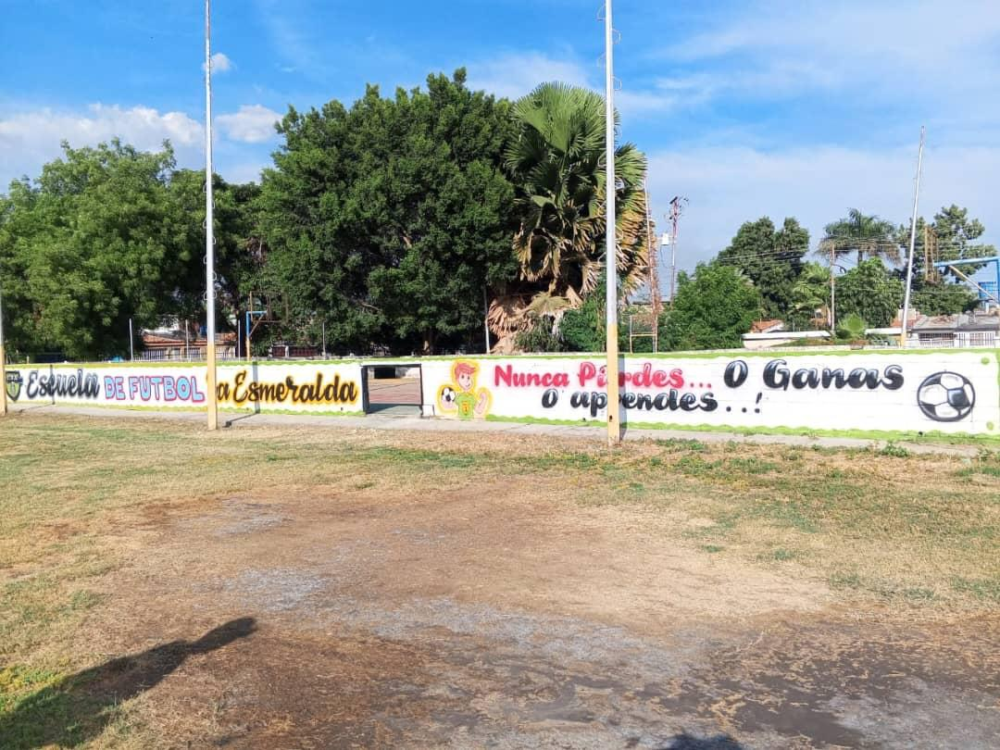
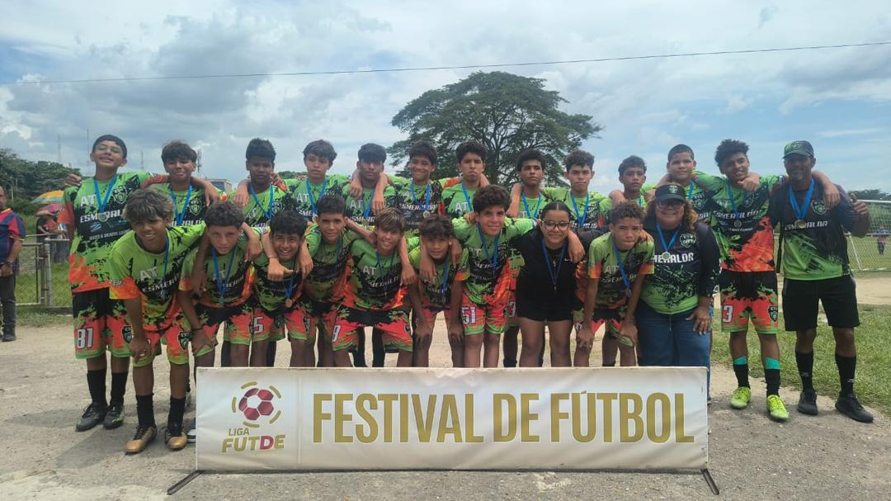

Turnos Semanales (Lunes a Viernes)
Las categorías Sub-10 y Sub-12 entrenan los martes y jueves de 4:00 PM a 6:00 PM, mientras que las categorías Sub-14 y Sub-16 entrenan los lunes, miércoles y viernes de 4:00 PM a 6:00 PM, adaptándonos al horario estudiantil de los jugadores.

Jornadas Sabatinas y Partidos
Los días sábados desde las 8:00 AM hasta las 12:00 PM realizamos encuentros amistosos, jornadas de liga y entrenamientos especiales para porteros y definición en todas nuestras categorías.

Requisitos e Indumentaria de Entrenamiento
Cada alumno debe asistir puntualmente con el uniforme verde oficial de la academia, espinilleras obligatorias, calzado adecuado para césped e hidratación personal.
